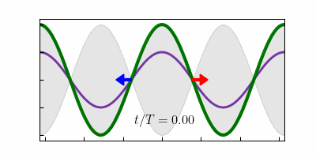

3.1. Standing wave#
This code plots two counter-progating waves and their sum at different times. The sum is a standing wave see Sec. 3.4 in Opticsf2f.
At the bottom we make an animation. You will need to install the package gif to run this.
The Jupyter Notebook is StandingWave.ipynb see
CLICK HERE TO ACTIVATE CODE CELLS
import matplotlib.pyplot as plt
import numpy as np
import matplotlib.patches as mpatches
import matplotlib.gridspec as gridspec
import matplotlib as mpl
mpl.rcParams['font.family'] = 'serif'
mpl.rc('text', usetex = True)
mpl.rcParams['xtick.direction'] = 'in'
mpl.rcParams['ytick.direction'] = 'in'
Using the subplots command in matplotlib, we make arrays of plots that are indexed using axs. For a 1 by N array there is only one index. Below we make 21 plots in a column with the time increasing as we move down.
cols = 1
rows = 21
num = 100
xmax = 2*np.pi
x = np.arange(-xmax,(num+1)/num*xmax,2*xmax/(num-1))
colours=['r','b']
lw =3
fig, axs = plt.subplots(rows,cols,figsize = (4*cols,rows))
for ii in range (0,rows):
t = np.pi/(rows-1)*ii
tp = t/(2*np.pi)
axs[ii].plot(x,0.5*np.cos(x-t),color='r',alpha=0.5,linewidth=2,zorder=1)
axs[ii].plot(x,0.5*np.cos(x+t),color='b',alpha=0.5,linewidth=2,zorder=1)
axs[ii].plot(x,0.5*np.cos(x+t)+0.5*np.cos(x-t),color='g',alpha=1.0,linewidth=lw,zorder=1)
axs[ii].fill_between(x,-np.cos(x),np.cos(x),color='black',alpha=0.1)
if t < np.pi/2:
axs[ii].text(0-0.225*xmax,-0.8,r'$t/T= %.2f $' %tp,fontsize=14)
else:
axs[ii].text(0-0.225*xmax,0.6,r'$t/T= %.2f $' %tp,fontsize=14)
arrow = mpatches.FancyArrow(np.pi/2+t, 0, np.pi/4, 0, width=0.04, head_width = 0.2,
head_length = 0.4, length_includes_head=True, color = 'red')
axs[ii].add_patch(arrow)
arrow = mpatches.FancyArrow(-np.pi/2-t, 0, -np.pi/4, 0, width=0.04, head_width = 0.2,
head_length = 0.4, length_includes_head=True, color = 'blue')
axs[ii].add_patch(arrow)
axs[ii].set_xlim(-xmax,xmax)
axs[ii].set_ylim(-1.1,1.1)
axs[ii].set_xticklabels([])
axs[ii].set_yticklabels([])
plt.subplots_adjust(left=0.0,bottom=0.0,right=1.0,top=1.0,wspace=0.0,hspace=0.0)

fig.savefig('StandingWave.png', dpi=300, facecolor='white', edgecolor='white')
Now we make an animation. The animation is commented out for the jupyter book version. To make a new gif uncomment the lines that include gif and frames = ….
#import gif
#@gif.frame
def Individual(frame_number):
N = 100
t = np.pi/(N-1)*frame_number
tp = t/(2*np.pi)
fig, ax = plt.subplots(figsize=(4,2),dpi=100)
ax.plot(x,0.5*np.cos(x-t),color='r',alpha=0.5,linewidth=2,zorder=1)
ax.plot(x,0.5*np.cos(x+t),color='b',alpha=0.5,linewidth=2,zorder=1)
ax.plot(x,0.5*np.cos(x+t)+0.5*np.cos(x-t),color='g',alpha=1.0,linewidth=lw,zorder=1)
ax.fill_between(x,-np.cos(x),np.cos(x),color='black',alpha=0.1)
if t < np.pi/2 or t > 3*np.pi/2:
ax.text(0-0.225*xmax,-0.8,r'$t/T= %.2f $' %tp,fontsize=12)
else:
ax.text(0-0.225*xmax,0.6,r'$t/T= %.2f $' %tp,fontsize=12)
arrow = mpatches.FancyArrow(np.pi/2+t, 0, np.pi/4, 0, width=0.04, head_width = 0.2,
head_length = 0.4, length_includes_head=True, color = 'red')
ax.add_patch(arrow)
arrow = mpatches.FancyArrow(-np.pi/2-t, 0, -np.pi/4, 0, width=0.04, head_width = 0.2,
head_length = 0.4, length_includes_head=True, color = 'blue')
ax.add_patch(arrow)
ax.set_xlim(-xmax,xmax)
ax.set_ylim(-1.1,1.1)
ax.set_xticklabels([])
ax.set_yticklabels([])
N = 200
#frames = [Individual(frame) for frame in range(0, N-1)]
#gif.save(frames, 'Standing.gif', duration=1, unit="ms", between="frames")
from IPython.display import Image
display(Image(data=open('Standing.gif','rb').read(), format='png'))
